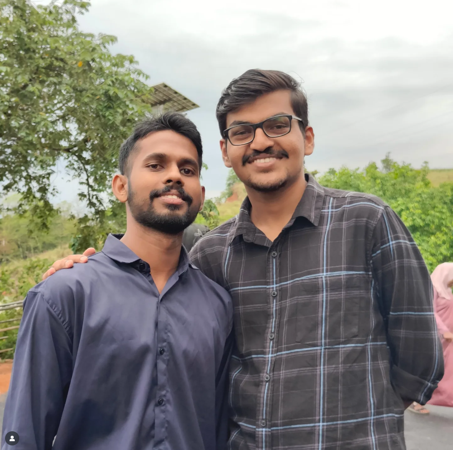
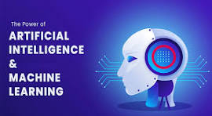
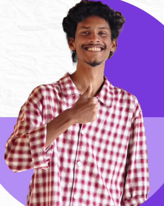

News & Updates
Stay updated with the latest happenings in our department.
Department Wins AI Hackathon 2025
Students secured 1st prize at the National Hackathon held in Bangalore.
Shanthanu and Arjun S , third-year B.Tech (IT Student) students at Government Engineering College Idukki (GECI), have secured first prize at the recently held Generative AI Hackathon with IBM Granite, out of 1,931 participants forming 267 teams worldwide. Their project, Content Hub, stood out for its innovative approach to AI-driven social media engagement, said principal K. Ashoka Reddy.
The 48-hour hackathon, organised by IBM and powered by their state-of-the-art Granite AI models, challenged competitors to build solutions that drive efficiency, automation and innovation in business workflows. The winning team received $5,000 in cash, $500 IBM Cloud credits and a special prize of one conference pass to IBM TechXchange Conference 2025 in Orlando, Florida.
Department News
Workshop on Machine Learning - Aug 2025
The Department of Information Technology, Government Engineering College Idukki, organized a comprehensive Workshop on Artificial Intelligence and Machine Learning on 25th July 2025 at 1.30 PM. The event was attended by over 120 students and faculty members, eager to learn about the latest advancements in AI and ML. The session began with an introduction to the fundamentals of machine learning, followed by a keynote address from Dr. Priya Menon, a renowned AI researcher from IIT Madras. She discussed the real-world impact of AI in healthcare, finance, and education, and shared insights on how students can build a career in this rapidly evolving field. The workshop included hands-on activities where participants worked in teams to develop simple machine learning models using Python. Students explored supervised and unsupervised learning techniques, data preprocessing, and model evaluation. The interactive Q&A session allowed attendees to clarify their doubts and discuss project ideas with the experts. Feedback from participants was overwhelmingly positive, with many expressing increased motivation to pursue further studies and projects in AI and ML. The department plans to organize more such events to foster a culture of innovation and technical excellence among students.
Industrial Visit to TCS Campus, Kochi
 GECI Students Gain Industry Insights at TCS Kochi Campus
Idukki, Kerala – A group of 45 final-year Information Technology students from Government Engineering College, Idukki (GECI), participated in an industrial visit to the Tata Consultancy Services (TCS) campus in Kochi on Monday, September 15, 2025. The visit was organized to provide students with practical exposure to the corporate IT environment.
The day-long event featured a guided tour of the state-of-the-art facilities and a crucial interactive session with senior TCS engineers. The discussion focused on the latest industry trends, including Artificial Intelligence, Machine Learning, and Cybersecurity. Students also received valuable information on TCS's recruitment processes, such as the National Qualifier Test (NQT), and potential career pathways.
Students found the experience highly insightful, providing a clear link between their academic curriculum and real-world applications. Dr. Rajesh Kumar, Head of the IT Department at GECI, emphasized the importance of such visits in preparing students for the professional world. The visit successfully provided the students with a deeper understanding of the IT industry, better equipping them for their future careers.
GECI Students Gain Industry Insights at TCS Kochi Campus
Idukki, Kerala – A group of 45 final-year Information Technology students from Government Engineering College, Idukki (GECI), participated in an industrial visit to the Tata Consultancy Services (TCS) campus in Kochi on Monday, September 15, 2025. The visit was organized to provide students with practical exposure to the corporate IT environment.
The day-long event featured a guided tour of the state-of-the-art facilities and a crucial interactive session with senior TCS engineers. The discussion focused on the latest industry trends, including Artificial Intelligence, Machine Learning, and Cybersecurity. Students also received valuable information on TCS's recruitment processes, such as the National Qualifier Test (NQT), and potential career pathways.
Students found the experience highly insightful, providing a clear link between their academic curriculum and real-world applications. Dr. Rajesh Kumar, Head of the IT Department at GECI, emphasized the importance of such visits in preparing students for the professional world. The visit successfully provided the students with a deeper understanding of the IT industry, better equipping them for their future careers.Seminar on Cybersecurity by Alumni
 Cybersecurity Expert and Alumnus Gokul Inspires Students Idukki, Kerala – Gokul, a distinguished alumnus of Government Engineering College, Idukki (GECI), and a prominent cybersecurity analyst, returned to his alma mater on September 15, 2025, to conduct an engaging seminar on "Navigating the Digital Threat Landscape." The event was organized by the college's alumni association to provide current students with vital industry insights. Gokul captivated the audience of budding engineers with real-world case studies on recent cyber-attacks, ethical hacking, and the growing importance of threat intelligence. He emphasized the critical need for proactive security measures and continuous learning to combat evolving digital threats. He also shared his career journey, offering practical advice on certifications and skills required to excel in the cybersecurity domain. The session included a lively Q&A segment where students queried him on topics ranging from ransomware to career opportunities in the field. The seminar successfully demystified the complex world of cybersecurity and inspired many students to consider it a future career path. The event underscored the valuable role alumni can play in mentoring the next generation of tech professionals.
Achievements
Notices & Announcements
- Internal exams postponed to Sept 12
- Lab maintenance scheduled for Sept 5
Archives
© 2025 Department of Information Technology. All Rights Reserved.